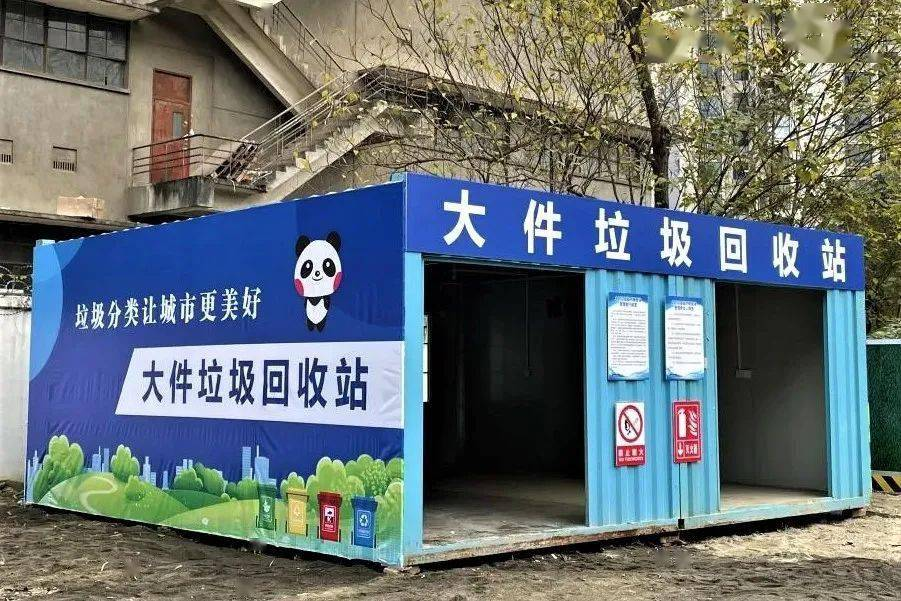

大件垃圾 Bulky waste


定义 Definition
指体积较大、整体性强、需拆分或专门处理的废弃物品，通常需通过特殊回收渠道处理，不可直接投入普通垃圾桶
Refers to large-sized, integral and complex items that need to be disassembled or specially handled for disposal. Usually, they should be processed through special recycling channels and cannot be directly thrown into ordinary trash bins.
例子 Examples
1.废弃家具类 Abandoned Furniture Category
衣柜、书柜、床架、木制桌椅、金属架、保险柜、文件柜等。
Closet, bookcase, bed frame, wooden tables and chairs, metal shelves, safe, filing cabinet, etc.
2.废弃家电类 Waste Electrical Appliances
冰箱、洗衣机、空调、电视机（需提前排空制冷剂）、微波炉、电风扇、电烤箱（需拆除电池）
Refrigerators, washing machines, air conditioners, televisions (coolants need to be emptied in advance), microwave ovens, electric fans, electric toasters (batteries need to be removed), etc.
3.装修废弃物类 Decoration Waste Items
门窗框（金属/木制）、复合地板（需捆扎）、卫浴洁具（浴缸、马桶）、大型灯具（水晶吊灯）、整体橱柜、地毯（卷起捆扎）。
Door and window frames (metal/wooden), composite flooring (need to be bundled), bathroom fixtures (bathtub, toilet), large lamps (crystal chandeliers), full cabinets, carpets (rolled up and bundled), etc.
4.交通工具部件类 Vehicle Components Category
自行车、婴儿车、轮椅、电动车车架（不含电池）、摩托车外壳等。
Bicycles, baby strollers, wheelchairs, electric vehicle frames (excluding batteries), motorcycle shells, etc.
5.其他大件杂物 Other bulky items
健身器材（跑步机、划船机、哑铃架）、园艺工具（割草机、铁艺花架、大型盆栽盆）、特殊物品（钢琴、婴儿床、组合滑梯）等。
Fitness equipment (treadmills, rowing machines, dumbbell racks), gardening tools (mowers, wrought iron flower stands, large potted plants), Special items (pianos, cribs, combination slides), etc.
上一篇：干垃圾
下一篇：装修垃圾